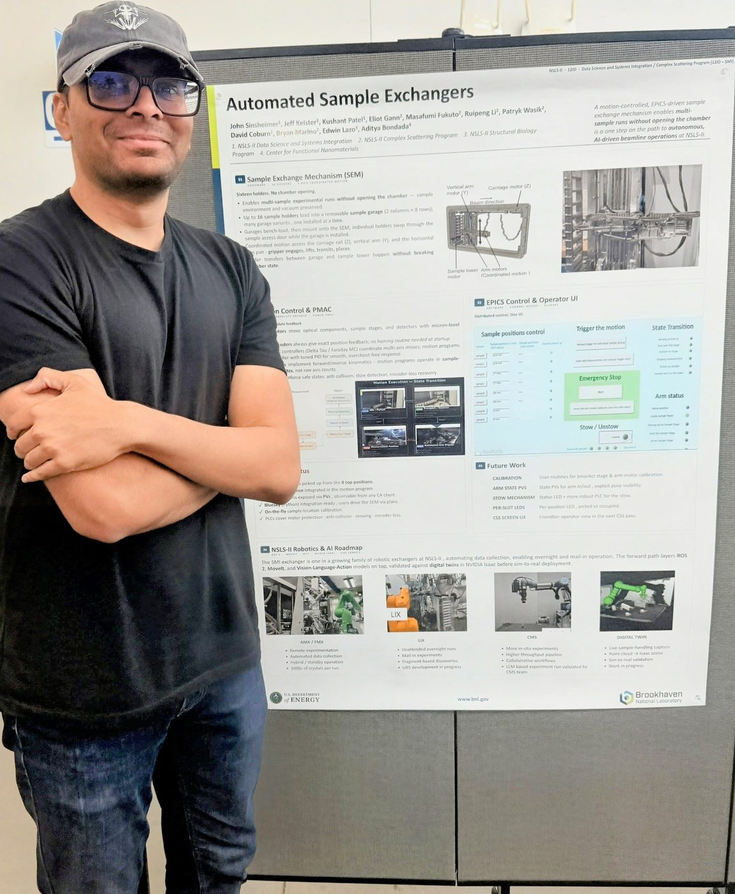
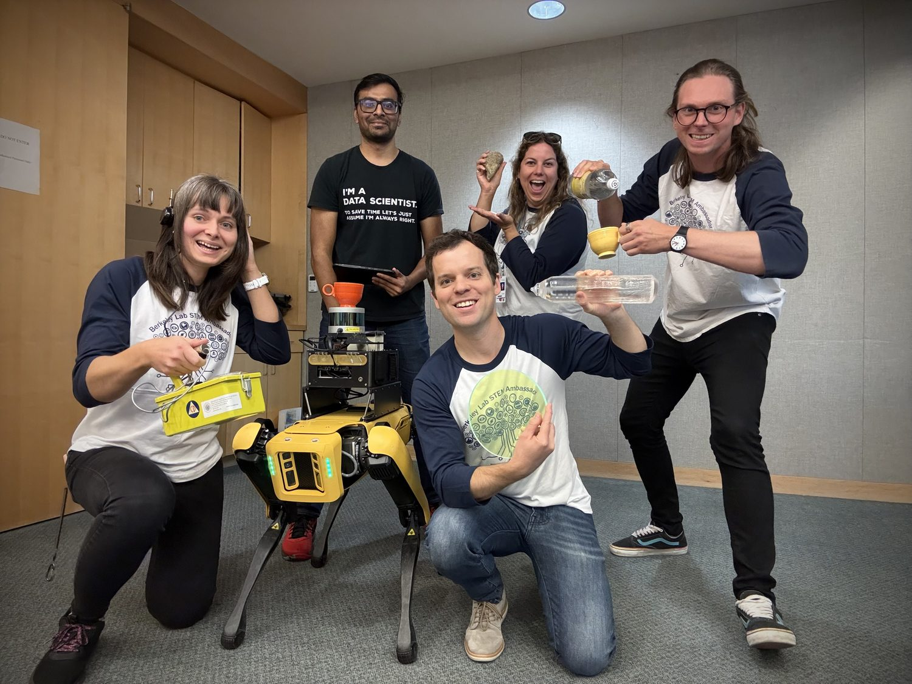
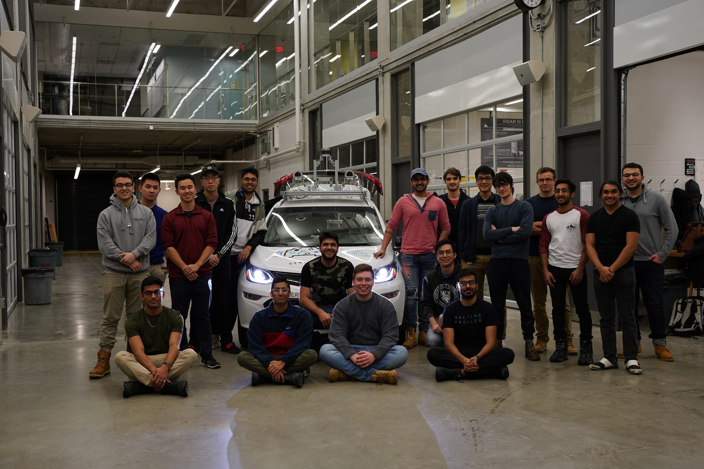
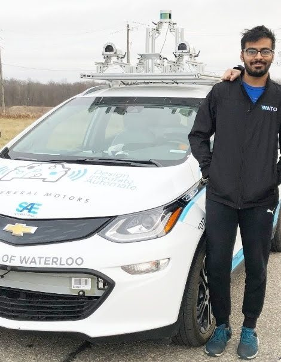
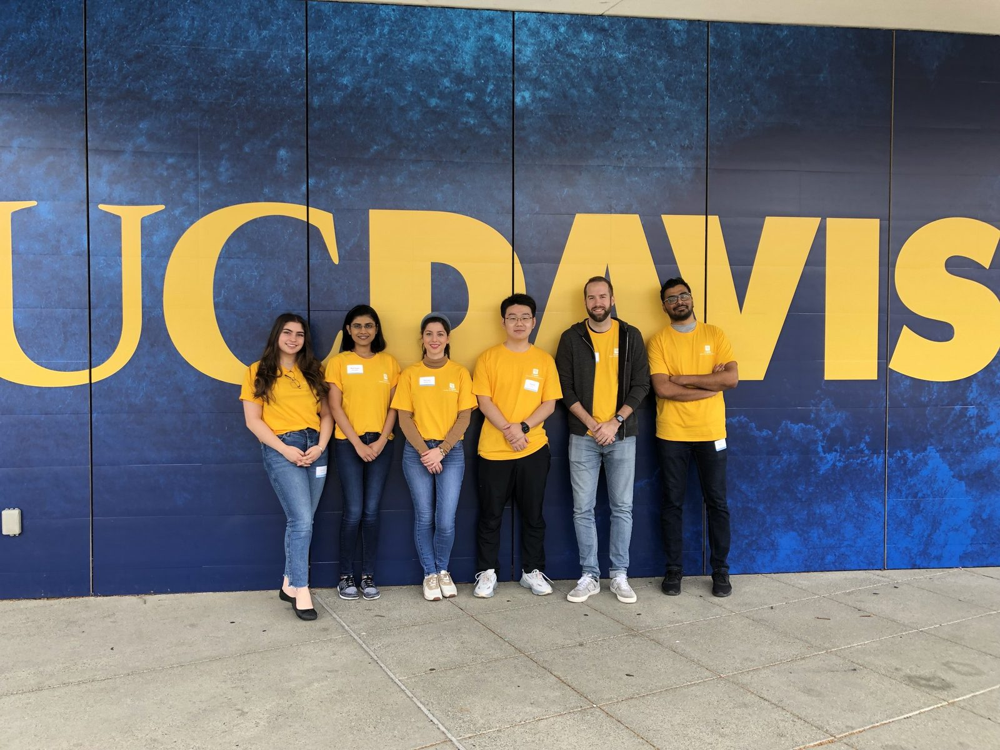
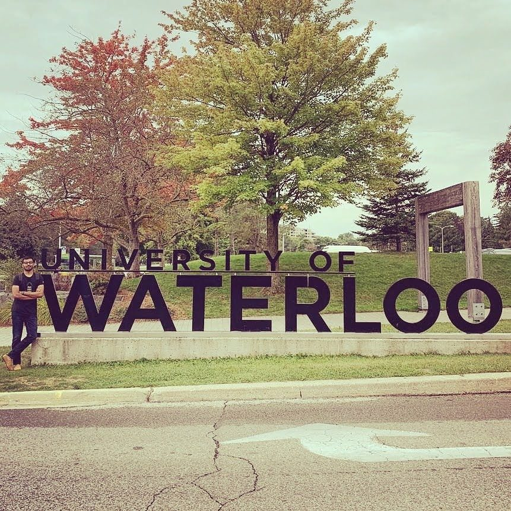

Currently
I’m a robotics and machine-learning engineer working where perception meets controls — the software that lets machines sense and act in the physical world.
A UWaterloo MASc (Mechatronics) alum with 5+ years across autonomous systems, computer vision, and control software. Right now I’m at Brookhaven National Laboratory, developing high-precision motion control and EPICS-based control systems for advanced synchrotron beamlines — including robotic sample exchange with UR and Stäubli arms, operator interfaces, and the deployment and testing that keeps experiments running.
Before Brookhaven I spent two years at Berkeley Lab teaching quadruped robots to map and inspect nuclear material, and a year at the UC Davis Neuroprosthetics Lab building closed-loop brain-computer interfaces. The throughline is the same: give a machine good sensors, a model of its world, and a way to move through it.
Experience
High-precision motion control and EPICS control software for synchrotron beamlines. Built robotic sample-exchange workflows with UR and Stäubli arms, operator interfaces for experiments, and supported deployment, testing, and maintenance of control systems.
Computer-vision and robotics research for nuclear safeguards: multi-sensor fusion (camera + lidar), SLAM and motion planning, point-cloud 3D mapping, and radiation-detection software running on quadruped platforms.
Machine learning for neural decoding — RNN and language-model speech decoders, computer-vision pose estimation, and analysis of brain datasets — while co-developing BRAND, a closed-loop deep-network platform for BCI experiments.
Motion planning and control for a full-scale autonomous vehicle: sampling-based planners, MPC and PID control, plus scalable sensor interfaces for cameras, lidars, IMUs, and radar. Validated algorithms in Foxglove and RViz on GPU clusters.
Delivered analytics and data-integration solutions across banking, energy, and telecom. Built interactive dashboards and statistical models, and ensured data accuracy across warehousing and governance.
What I Build
Beamline Control & Motion
Motion control, EPICS integration, and robotic sample exchange that turn synchrotron beamlines into precise, repeatable experimental instruments.
Inspection & Safeguards
Quadruped robots that fuse camera, lidar, and gamma-ray data to build 3D rad-maps, navigate cluttered facilities, and verify nuclear material containers.
Brain-Computer Interfaces
Real-time deep-network deployment for closed-loop BCIs — speech decoding and pose estimation under tight latency constraints.
In the Field






Selected Papers
Recognition
Clinical Research Forum — Top U.S. Study
Helped build BRAND, the closed-loop deep-learning platform behind speech-restoration research for people with ALS — recognized among the nation’s top clinical research studies.
Rad Maps with Robot Dogs
Featured in Berkeley Lab’s Nuclear Science Division for autonomous radiation mapping and inspection using quadruped robots.
Read the feature ↗SAE AutoDrive Challenge — 2nd Nationally
Led and contributed to WATonomous, placing 2nd nationally in the SAE AutoDrive Challenge alongside multiple national robotics-competition wins.
Nuclear Safeguards Research
Contributed to autonomous measurement systems for UF₆ cylinders, robotic radiation-detector platforms (IV-DRIP), and path-planning for nuclear-container inspection.
Writing
Essays on machine learning, fairness, and the ideas that shape how these systems behave.
All posts on Medium ↗Algorithmic Bias — A Tool of Manipulation
How bias creeps into the models behind search, social feeds, and criminal-justice tools — and what de-biasing toolkits like IBM’s AIF360 can and can’t do.
Read on Medium ↗ EssayGANs — The Most Interesting Idea in 10 Years of ML
A tour through generative adversarial networks: generators, discriminators, backprop, and the wide world of things you can build once a model can imagine.
Read on Medium ↗